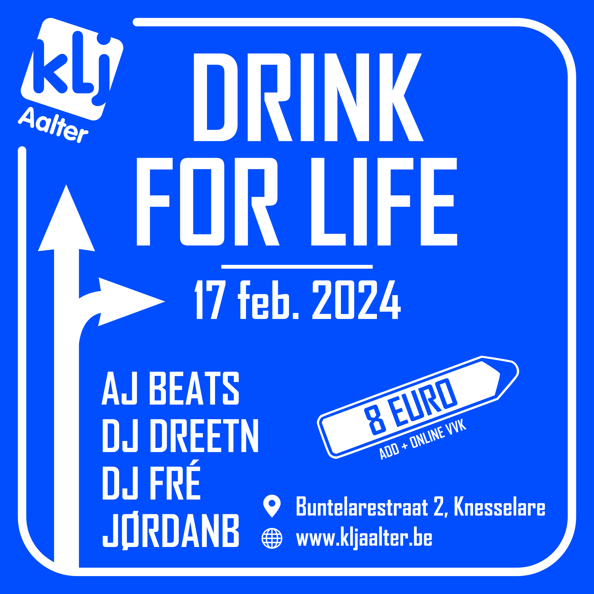
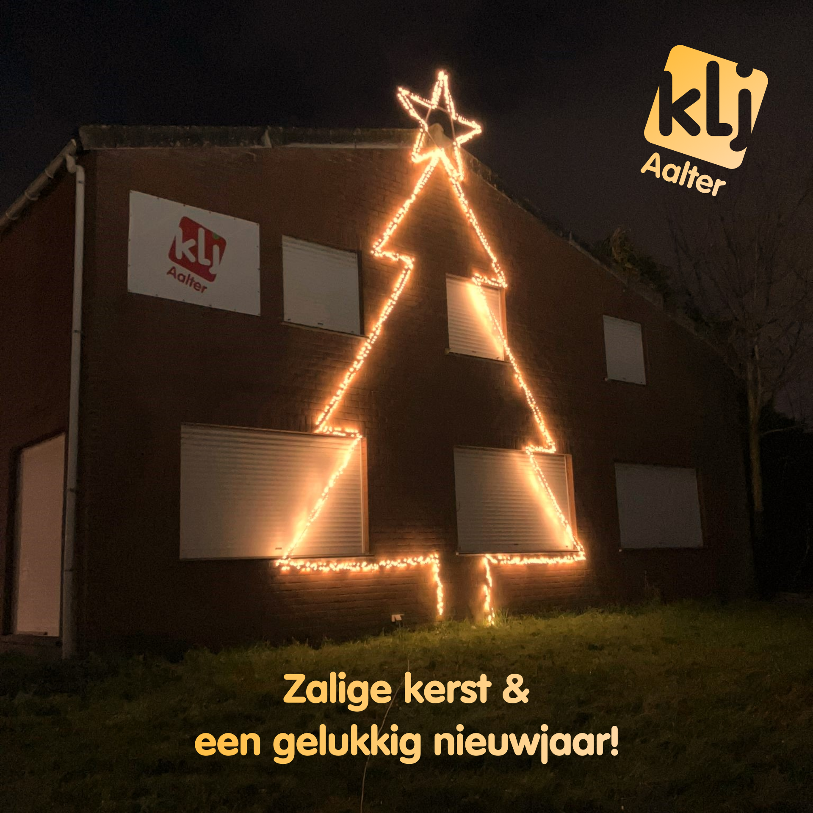

Drink for Life 2024
🍻 DRINK FOR LIFE - 17 FEB 2024 🍻KLJ Aalter presenteert: DRINK FOR LIFE op zaterdag 17 februari 2024.
Vertier, bier en plezier verzekerd!!
📍 Buntelarestraat 2, Aalter/Knesselare, (Loods De Baere)
💶 €8 ADD/Online VVK >> tickets.kljaalter.be
🍺 Jupiler van ‘t vat
🍹 Cocktailbar
🍔 Hamburgerkraam
👕 Vestiaire
// LINE-UP //
>> AJ Beats
>> DJ Dreetn
>> DJ Fré
>> JørdanB
Facebook evenement: Drink for Life 2024

Foto van de maand
Ons KLJ lokaal is al helemaal in de kerstsfeer! 🎄KLJ Aalter wenst iedereen een zalige kerst en een gelukkig nieuwjaar!

Links
Instagram: @kljaalterFacebook: KLJ Aalter
Youtube: KLJ Aalter
Contact
Email: info@kljaalter.beWout Corijn: hoofdleider
0470 34 93 84
Adres
Melkerijstraat 14 Lotenhulle/Aalter 9880